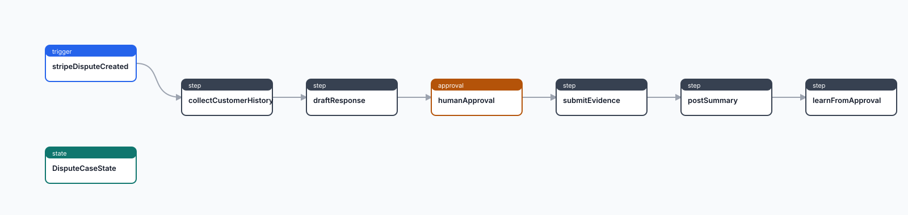

Stripe sends event
The app receives the raw body, headers, event type, and account path segment.
Production app flow
This tour follows the complete app shape: Stripe posts a signed webhook, Prisma Compute durably ingests it, a worker collects evidence from provider APIs, finance reviews high-value disputes, then the workflow submits evidence and records what was approved.
The webhook handler does only the work required for a fast acknowledgement. Slow provider calls and model calls happen after durable ingest, through the worker route.
The app receives the raw body, headers, event type, and account path segment.
The Stripe connector validates the signature before any ingest event is stored.
The event is normalized, deduped, stored, and matched to the workflow trigger.
The run leaves the webhook path and executes checkpointed steps with retries.
Disputes over $500 pause for finance approval before external submission.
Operators inspect ingest events, run state, approvals, outbox entries, and dead letters.
A production deployment has three clear boundaries: connector verification, durable workflow runtime, and provider-specific step code.

Pick each stop to see the exact production behavior and the repository file that owns it.
The workflow is selected by source and event type. The dedupe expression points at the Stripe dispute id, so retries for the same dispute collapse into one case.
workflow DisputeEvidence {
trigger stripeDisputeCreated {
source = "stripe"
event = "charge.dispute.created"
dedupeBy = "event.data.object.id"
}
approval humanApproval {
when = "state.amount > 50000"
assignees = ["role:finance_ops"]
onApprove = submitEvidence
}
}`workflow generate` emits a manifest, typed client helpers, Studio artifacts, and `compute.ts`. In production, `DATABASE_URL` selects `PostgresWorkflowStore`.
const connectionString = process.env['DATABASE_URL'];
const store = connectionString
? new PostgresWorkflowStore({
connectionString,
schemaName: "_prisma_workflows",
})
: undefined;
export function createApp(options = {}) {
return createWorkflowHttpApp({
manifest,
steps,
connectors: { ...connectors, ...(options.connectors ?? {}) },
...(store ? { store } : {}),
});
}The HTTP app preserves the raw request body for signature debugging, normalizes the event if a connector is present, stores the ingest event, creates a queued run, and returns.
curl -X POST https://app.example.com/api/prisma-workflows/ingest/stripe/acct_live_123 \
-H "stripe-signature: t=...,v1=..." \
-H "content-type: application/json" \
-d '{
"type": "charge.dispute.created",
"data": { "object": { "id": "du_001", "amount": 72500 } }
}'
# Response for new work
{ "matchedWorkflows": ["DisputeEvidence"], "duplicate": false }The step reads `event.data.object`, extracts the dispute id, customer id, amount, currency, and reason, then calls the connected systems in parallel.
const [hubspotHistory, shopifyOrders, zendeskTickets, stripeMetadata] =
await Promise.all([
providers.hubspot.customerHistory(customerId),
providers.shopify.orderHistory(customerId),
providers.zendesk.priorTickets(customerId),
providers.stripe.paymentMetadata(disputeId),
]);
return {
disputeId,
customerId,
customerEmail: stripeMetadata['receiptEmail'],
amount,
currency,
reason,
hubspotHistory,
shopifyOrders,
zendeskTickets,
stripeMetadata,
};The draft response is created before the approval gate. If the amount is over $500, the run waits with an approval record assigned to finance operations.
# Inspect pending work for Studio or an approval queue
GET /api/prisma-workflows/studio
# Resume the run from submitEvidence
POST /api/prisma-workflows/approve/apr_123
{
"approvedBy": "agent@example.com",
"reason": "Evidence matches fulfillment records."
}The Stripe evidence submission and Slack summary are external side effects. Their idempotency expression uses `state.disputeId`, so retries do not submit a second evidence packet for the same dispute.
step submitEvidence {
run = "./src/steps/submit-evidence.ts"
checkpoint = true
sideEffects = "external"
idempotency = "state.disputeId"
}
step postSummary {
run = "./src/steps/post-summary.ts"
sideEffects = "external"
idempotency = "state.disputeId"
}Studio reads the same runtime data the worker writes: definitions, ingest events, runs, step attempts, state snapshots, approvals, outbox entries, and dead letters.
GET /api/prisma-workflows/studio
GET /api/prisma-workflows/inspect/:runId?include=steps,timeline,stateSnapshots,approvals,outbox,deadLetters
POST /api/prisma-workflows/replay/:runId
# Local generated preview
open examples/workflow-stripe-disputes/studio/workflows.htmlThe workflow definition stays the same. The production app swaps mocks for real connectors, deploys with Postgres, and configures operational controls.
Designed for repeatable local tests.
Owns account-specific integration concerns.
Owns durable orchestration behavior.
These are the pieces a real app wires before accepting live Stripe events.
Provision Postgres, run workflow DDL, and set `DATABASE_URL` so Compute uses `PostgresWorkflowStore` with `_prisma_workflows`.
Implement signature verification, event normalization, account scoping, and the dispute-level dedupe policy.
Store Stripe, HubSpot, Shopify, Zendesk, and Slack credentials outside code and resolve them by tenant or account.
Run `POST /api/prisma-workflows/run` from a worker loop or scheduler so webhook requests stay fast.
Connect `role:finance_ops` to the real user directory and expose approve or reject actions in the operator UI.
Watch dead letters, failed attempts, approval timeouts, duplicate events, and provider rate-limit responses in Studio.